University of Twente · ITC Faculty
Tackling disasters, climate adaptation and urban complexity through spatial data science.
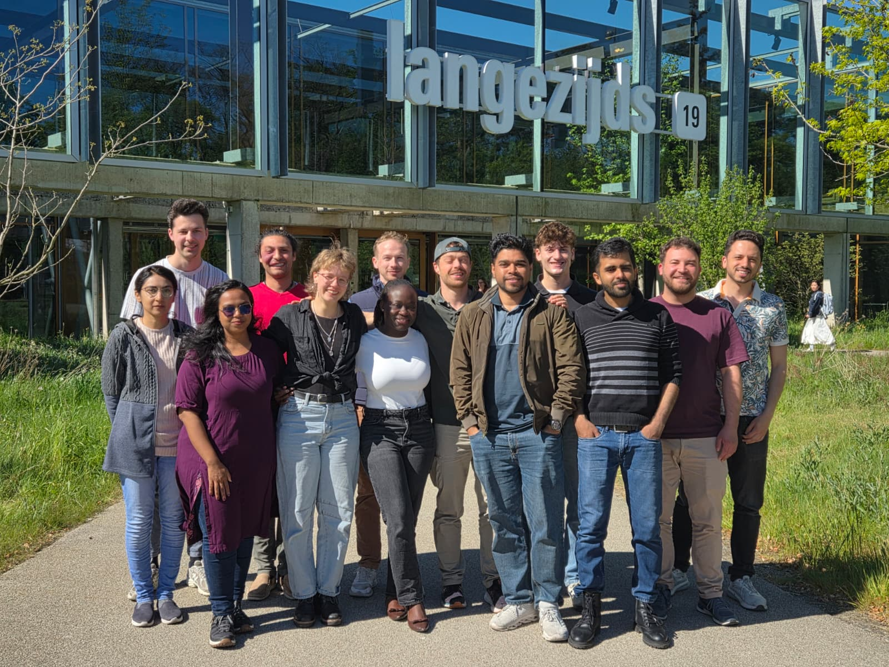
We believe that space is never neutral. As spatial engineers and society-minded scientists, we use maps, data and systems thinking to make the world more equitable, resilient and sustainable — one complex problem at a time.
Our class is heading abroad as part of the programme's international module — applying spatial analysis and socio-environmental methods in a real-world, cross-cultural context. This page is our collective introduction: who we are, what drives us, and how to connect.
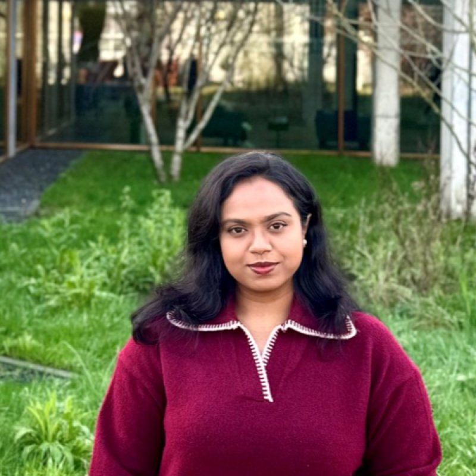
Anika
Bangladesh
"Interested in applying data-driven approaches to hazard mitigation, and sustainable city development."
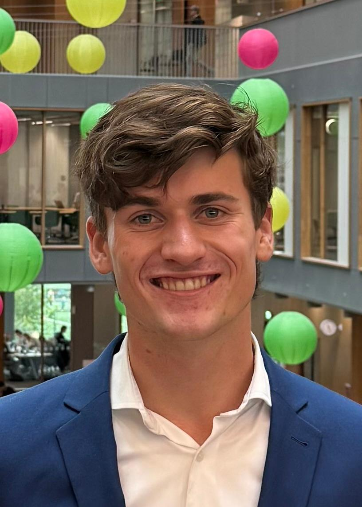
Bart
Netherlands
“Focused on applying remote sensing data to better understand environmental change and support sustainable spatial development.”
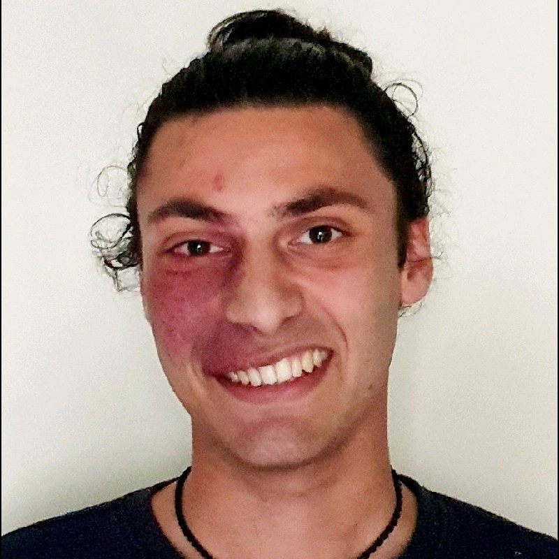
Ethan
Netherlands
"Sustainable development — climate change, biodiversity, nature-based, focusing on inter- and transdisciplinarity."
Ishraque
Bangladesh
"Linking digital twins with stakeholder insight for climate-resilient and smarter city planning."
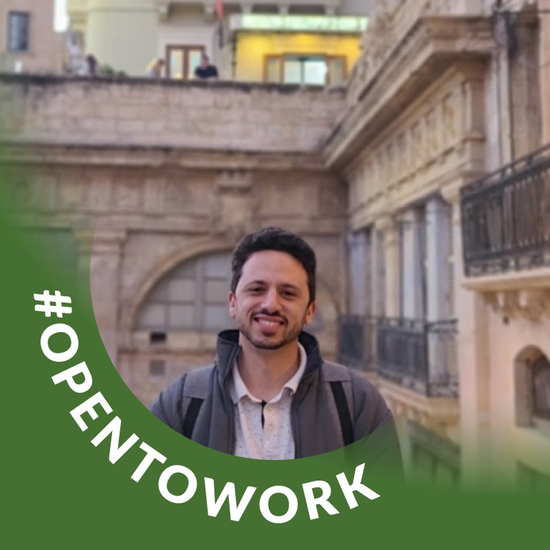
Jonathan
Malta
"Applying GIS and remote sensing to support data-driven urban, transport, and climate-resilient planning."
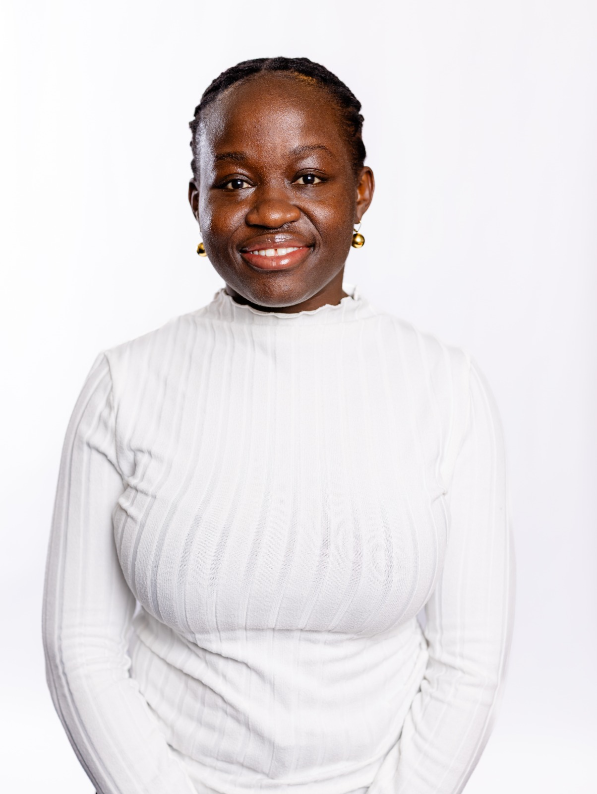
June
Kenya
“Focused on delivering tangible, community-driven solutions that enhance functionality and spatial equity.”
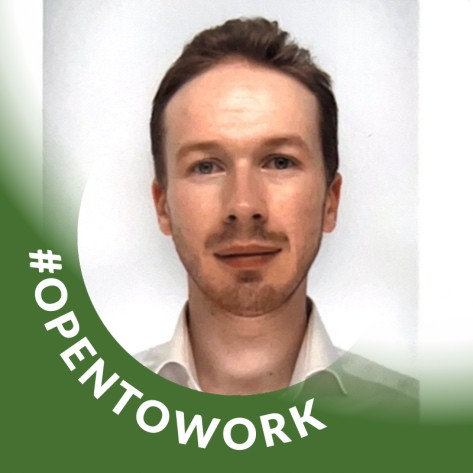
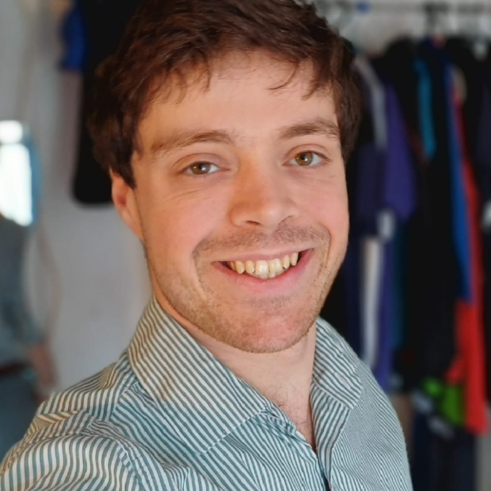
Luuk-Jan
Netherlands
"Integrating technical expertise for societal and spatial problem solving."
Mashal
Pakistan
"Nature-Based Solutions, their socio-economic impact on climate adaptation."
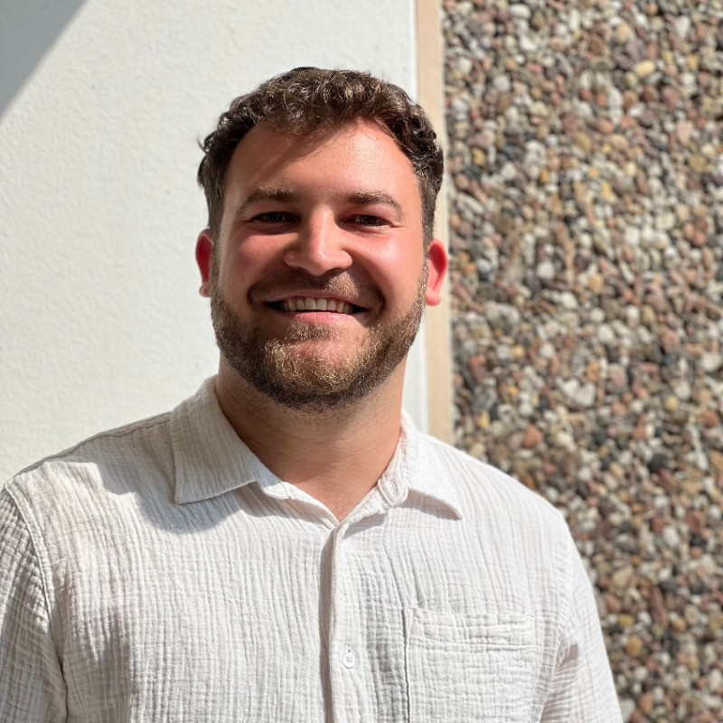
Philip
Germany
"Broad interest in geography and geoscience, passionate about presenting complex things in a creative, understandable way."
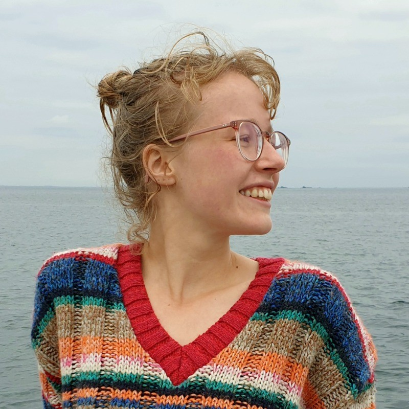
Pleun
Netherlands
“Motivated to create a brighter future through sustainable water management.”
Quinten
Netherlands
"GIS specialist with broad interests, turning data into actionable insights."
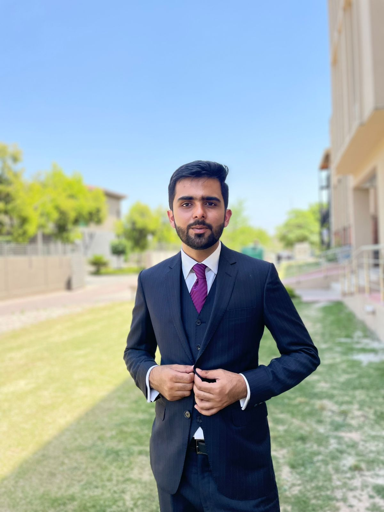